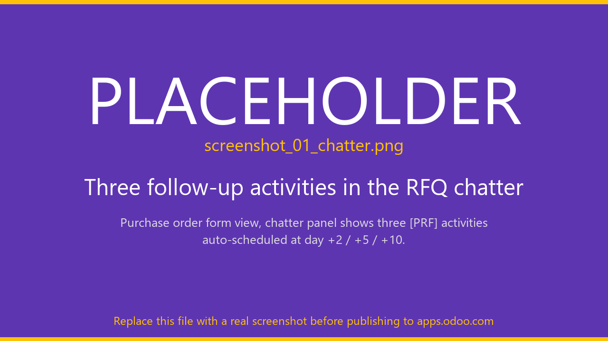
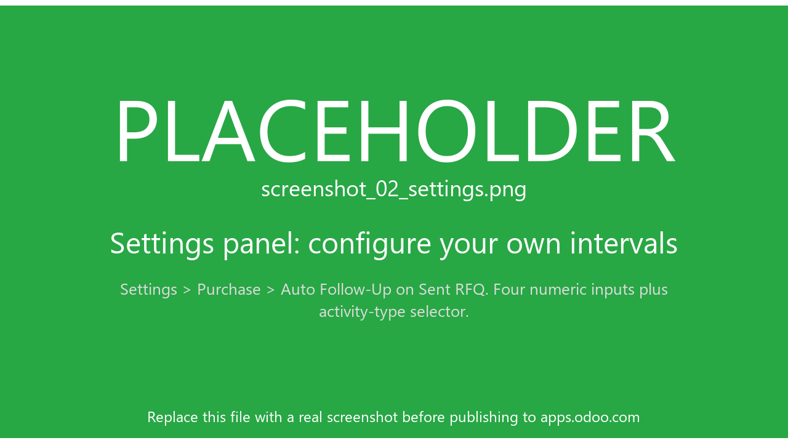
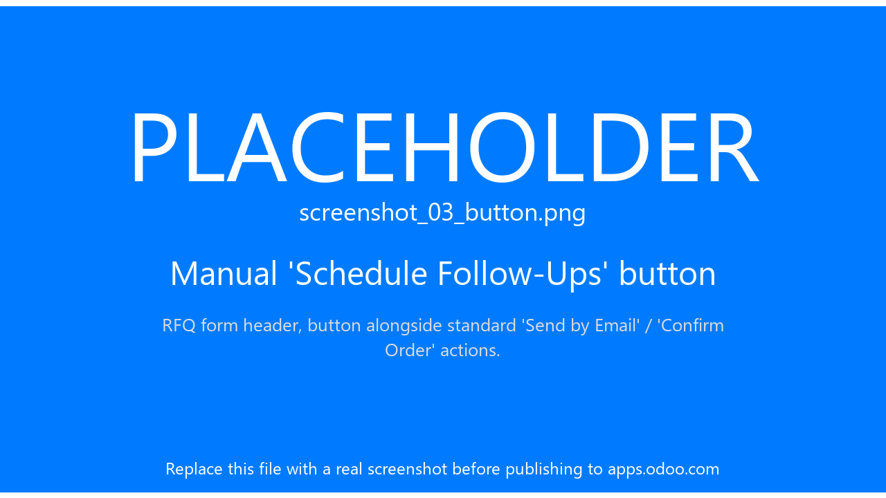
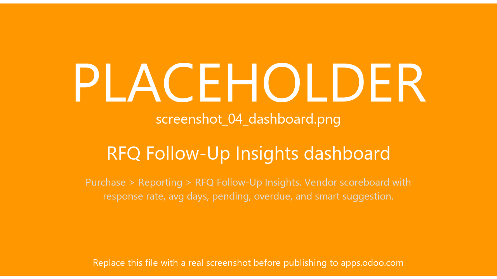
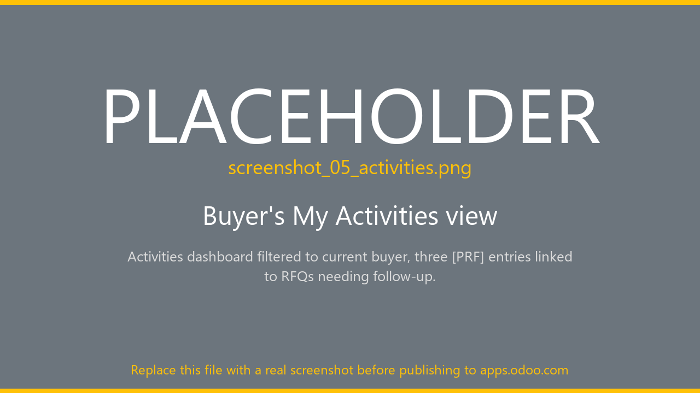
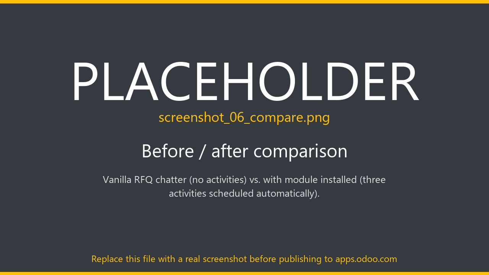

Auto-schedule three internal follow-up activities the moment an RFQ is sent to a vendor. Pending follow-ups close themselves when the order is confirmed or cancelled. Plus a per-vendor insight dashboard with rule-based smart suggestions.
LGPL-3 Odoo 19 CE & EE No external AI






The dashboard computes each vendor's average response time (days from RFQ creation to PO confirmation) and applies a simple rule:
100% rule-based. No LLM, no external API, no data leaves your Odoo instance.
This is a free, community-supported module released under LGPL-3. Issues and pull requests are welcome on GitHub.